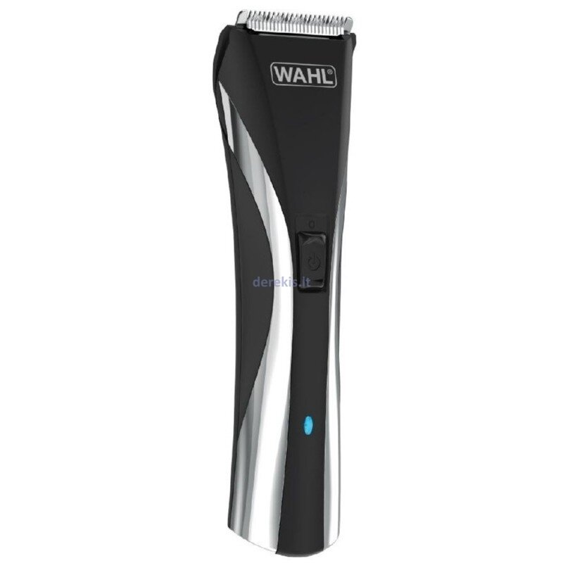
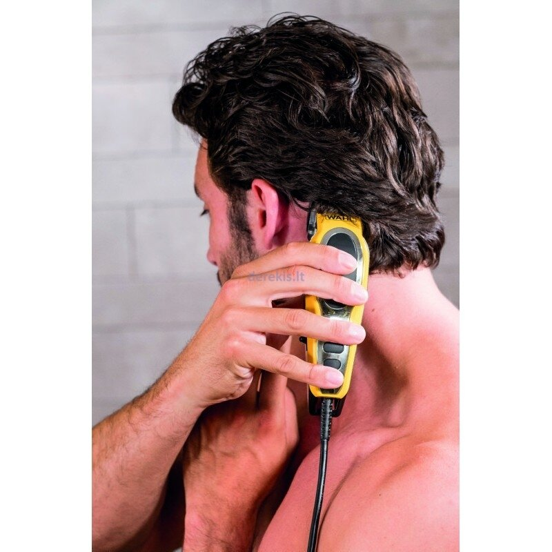

Kaip išsirinkti plaukų kirpimo mašinėlę? - Kaip išsirinkti plaukų kirpimo mašinėlę? - www.rde.lt

Internetinė parduotuvė www.rde.lt Laimėk elektrinį paspirtuką Naujienos Prekių pristatymas Mokėjimo būdai Naudinga informacija Kontaktai +370 700 77772 | | [email protected] | Meniu 14 dienų išbandymui Naudotojo atsisakymo teisėmis ir Konfidencialumo politika SERVICE PLUS papildoma garantija Akcija Braun Money Back Epson cash back Pristatyta pažeista prekė Garantinis aptarnavimas Asmens duomenų apsauga Privatumo politika Slapukai (angl.Cookies) Kaip išsirinkti? Kaip išsirinkti nešiojamąjį kompiuterį? Kaip išsirinkti mobilųjį telefoną? Kaip išsirinkti planšetę? Kaip išsirinkti stacionarų kompiuterį? Kaip išsirinkti spausdintuvą? Kaip išsirinkti monitorių? Kaip išsirinkti fotoaparatą? Kaip išsirinkti televizorių? Kaip išsirinkti šaldytuvą? Kaip išsirinkti šaldiklį? Kaip išsirinkti įmontuojamą šaldytuvą? Kaip išsirinkti skalbimo mašiną? Kaip išsirinkti džiovyklę? Kaip išsirinkti indaplovę? Kaip išsirinkti įmontuojamą indaplovę? Kaip išsirinkti įmontuojamos orkaitės ir kaitlentės rinkinį? Kaip išsirinkti įmontuojamą gartraukį? Kaip išsirinkti įmontuojamą kavavirę? Kaip išsirinkti orkaitę? Kaip išsirinkti gartraukį? Kaip išsirinkti dulkių siurblį? Kaip išsirinkti dujinę viryklę? Kaip išsirinkti elektrinę viryklę? Kaip išsirinkti dujinę kaitlentę? Kaip išsirinkti indukcinę kaitlentę? Kaip išsirinkti stiklo keraminę kaitlentę? Kaip išsirinkti daugiafunkcį puodą? Kaip išsirinkti virtuvės kombainą? Kaip išsirinkti kavos aparatą? Kaip išsirinkti mėsmalę? Kaip išsirinkti plakiklį? Kaip išsirinkti plaukų kirpimo mašinėlę? Kaip išsirinkti MP3 arba MP4 grotuvą? Kaip išsirinkti automagnetolą? Kaip išsirinkti muzikinį centrą? Kaip išsirinkti kolonėles? Kaip išsirinkti Blu-Ray grotuvą? Kaip išsirinkti skenerį? Kaip išsirinkti vaizdo registratorių? Kaip išsirinkti siuvimo mašiną? Kaip išsirinkti plaukų tiesintuvą? Prekių krepšelis Krepšelyje 0 prekių Į krepšelį Kategorijos IT produktų išpardavimas Kompiuterinė technika Televizoriai Mobilieji telefonai ir jų aksesuarai Fotoaparatai ir vaizdo kameros Vaizdo ir garso technika Stambioji buitinė technika Montuojamoji buitinė technika Smulkioji buitinė technika Žaidimų kompiuteriai ir jų priedai Grožis ir sveikata Riedžiai ir paspirtukai Auto prekės ir navigacija Išmanūs namai Namams ir sodui Aksesuarai Prekių išdavimo vietos S. Konarskio g. 2 - 99 Kontaktai
Naudinga informacija Kaip išsirinkti? Kaip išsirinkti plaukų kirpimo mašinėlę? Kaip išsirinkti plaukų kirpimo mašinėlę?
Plaukų kirpimo mašinėlės – jų yra labai daug. Yra ir labai pigių modelių ir dešimt kartų brangesnių. Nuo ko priklauso kaina, kokios plaukų kirpimo mašinėlės būna ir kokias geriau išsirinkti, papasakosime Jums toliau straipsnyje.
Skirtumai tarp profesionalios plaukų kirpimo mašinėlės ir buitinės
Pagrindinis skirtumas yra profesionalus variklis. Rotorinis, su dideliu galingumu (30-45 W), kur apsisukimų skaičius yra 4500-5500 per minutę, ir svarbiausia – su funkcija, kuri sustabdo variklio sukimąsi esant žemai akumuliatoriaus įkrovai. Neprofesionaliuose įrenginiuose, šiuo atveju variklis toliau dirba, lėtėja, dėl ko mašinėlė pradeda buksuoti, tampyti ir rauti plaukus. Mėgėjiškai (buitinei) kirpimo mašinėlei pageidautina bent jau rotorinis motoriukas, kitu atveju kirpimo mašinėlė labai vibruos.
Yra dar keletas skirtumų tarp profesionalių plaukų kirpimo mašinų ir mėgėjiškų: tikslesnis ilgio reguliavimas (gali būti 0,2 mm), greitas įkrovimas (maždaug 1 valanda). Profesionalios plaukų kirpimo mašinėlės yra įrengtos aukštos kokybės savaime pasigalandančiais pjovimo ašmenimis ir turi keletą antgalių, turinčių didelę kirpimo ilgio variaciją.
Ašmenų medžiaga
Jei nurodoma medžiaga yra metalo ar įprasto (ne nerūdijančio) plieno – yra archajiška. Daugelyje modelių, tiek profesionalių, tiek mėgėjiškų - ašmenys pagaminti iš nerūdijančio plieno. Rinkodaros tikslais, kad patraukliau skambėtų, pavadinimų yra pilna: medicininė, chirurgijos, japonų - esmė nesikeičia. Jei kirpimo mašinėlės žymėjimas yra 18/10 – tai yra chromuoto nikelio lydinys. Kai kurie žmonės yra alergiški nikeliui (tai yra aktualu, jei jūs skutatės „nuliniu ir ašmenys kontaktuoja su oda). Tokiems žmonėms tiktų titano ar keramikos ašmenys.
Visi šie niuansai yra svarbūs profesionaliam kirpimo mašinėlės naudojimui salonuose: ateina skirtingi žmonės su skirtingais plaukais ir problemomis. Mašinėlei Jūsų namuose svarbiausia, kad ašmenys nerūdytų ir automatiškai galąstųsi. Jie, žinoma, nėra amžini, tačiau ilgą laiką nenubunka, nes ašmenys turi sudėtingą konstrukciją, kuri neišeina iš rikiuotės greit.
Ašmenų forma
Kokybiškam darbui ir tiesiam visų plaukų kirpimui, peiliukų forma yra labai svarbi. Didžiausi gamintojai gamina peiliukus su mažiausiais dantukais W- arba X formos. Jie pakelia trumpus plaukus ir geriau juos nuskuta. Ašmenų forma paprastai yra nustatoma vizualiai, tačiau taip pat labai dažnai formos žymėjimas nurodomas prekės charakteristikose arba mašinėlės pavadinime.
Ilgio nustatymas: mechaninis ar automatinis?
Čia viskas yra paprasta: kuo daugiau variacijų, tuo geriau. Paprastai komplektą sudaro du ar daugiau antgaliai, o kirpimo ilgis reguliuojamas mechaniškai arba (svarbu, kad naudoti jungiklį būtų patogu), elektroniniu būdu: labiau pažengę modeliai turi skaitmeninius nustatymus. Galimybė keisti ilgį kirpimo metu yra svarbu, ko gero, tik profesionaliems stilistams.
Su kokia mašinėle galima lengvai nuskusti pakaušį?
Yra modeliai, kuriuose kerpantis blokas gali pasisukti ir užsifiksuoti patogiu kampu.
Skirtumai tarp belaidės ir laidinės mašinėlės
Egzistuoja plaukų kirpimo mašinėlės, kurios veikia tik prijungus prie elektros šaltinio – jos pigios. Jeigu Jūs pasipuošėte taikytis su laidu, tai šios kirpimo mašinėlės nėra blogos. Variklis veikia stabiliu greičiu, nėra problemų su krovimu ir akumuliatoriais.
Koks akumuliatorius turi būti?
Geriausia, jei belaidėje plaukų kirpimo mašinėlėje yra ličio jonų baterija – greitesnis įkrovimas ir ilgiau laiko baterija. Tačiau daug rimtų gamintojų neatsisako nikelio metalo hidrido baterijų, tiesiog padaro jas dvigubas.
Baterijos talpa yra svarbi, tačiau remiantis tuo, sunku orientuotis. Vartotojui lengviau atkreipti dėmesį, jeigu modelio specifikacijose yra nurodyta akumuliatoriaus naudojimo trukmė ir įkrovimo laikas. Reikia suprasti, jeigu modelyje yra keletas greičių, tuomet naudojimo laikas nurodomas mažiausiam iš jų. Naudojant didžiausią greitį plaukų kirpimo mašinėlė dirbs pusantro arba net du kartus trumpiau. Svarbu, kad mašinėlė turėtų funkciją – „greitas krovimas“. Pavyzdžiui, pakrovus 10 minučių, to pakaktų, kad mašinėlė galėtų kirpti 10 minučių. Jei kirpimo mašinėlė brangiai kainavo, ir gaila ją išmesti po poros metų ar pakeisti - labai svarbu, kad baterija būtų keičiama.
Antgalis filiravimui – ne profesionalams
Toks antgalis reikalingas kaip tik ne profesionalams, o mėgėjams. Specialistai atlieka filiravimą specialiomis arba įprastomis žirklėmis. Namie filiravimu arba retinimu, galite padaryti šukuoseną, kad ji atrodytų lengvesnė ir labiau estetiška.
Lengva priežiūra
Lengviausia yra prižiūrėti kirpimo mašinėlę, jei korpusas yra atsparus vandeniui, yra izoliuotas, ir galima tiesiog nuplauti darbinę dalį po vandens srove. Neblogai, jei dalis su ašmenimis yra nuimama. Blogai, jei numatytas tik sausas valymas: pirmiausia, tai yra nepatogu, antra, gali byloti apie gamintojo nepasitikėjimą ašmenų kokybe.
Vakuuminis plaukų įsiurbimas
Kai kurios plaukų kirpimo mašinėlės turi įmontuotą plastikinį konteinerį nukirptiems plaukams, ir pačiame įrenginyje yra įmontuotas nedidelis siurblys. Kadangi konteineriai yra labai maži – aktualu, tik tuo atveju jeigu plaukų kirpimo mašinėlė naudojama trumpiems plaukams kirpti.www.rde.lt. © 2020 UAB MK TRADE LT Apie autorių teises Palyginimui įkelta 0 prekių Palyginti pasirinktas Išvalyti Prekių pristatymas | Apmokėjimo būdai | Kur galima atsiimti prekes Cookies Sutinku Mūsų tinklapyje naudojami slapukai, jie padeda mums padaryti svetainę patogesnę. Sužinoti daugiau
